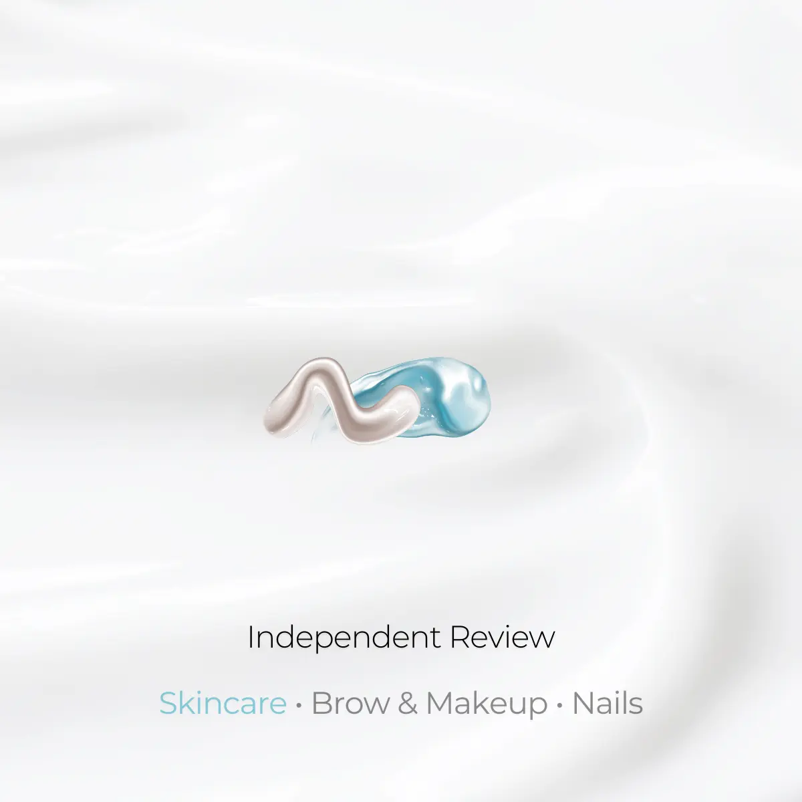
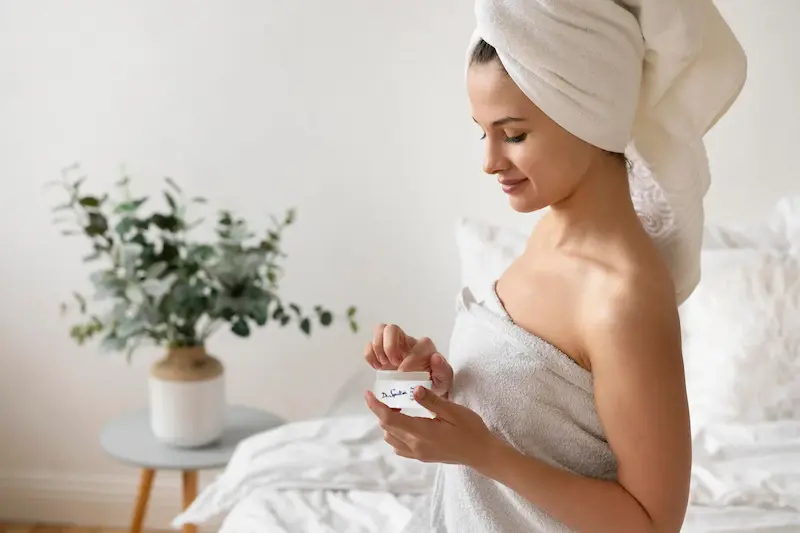

в косметике/urea-title-1200.webp)
Мочевина (Urea) — это естественный компонент нашей кожи, входящий в состав натурального увлажняющего фактора (NMF). В косметике она ценится за двойное действие: способность притягивать воду в глубокие слои эпидермиса и мягко отшелушивать ороговевшие клетки.
Посмотреть услугиЧто такое мочевина в косметике?
 Глубокая гидратация и обновление: секрет безупречной гладкости
даже самой сухой кожи
Глубокая гидратация и обновление: секрет безупречной гладкости
даже самой сухой кожи
Мочевина — это органическое соединение, которое в норме присутствует в здоровой коже. Когда её уровень падает, кожа становится сухой, стянутой и начинает шелушиться. В отличие от масел, она не просто создает пленку, а буквально «связывает» молекулы воды внутри тканей.
Она обладает высокой гигроскопичностью и способна проникать через роговой слой, улучшая барьерные функции кожи и делая её более эластичной.

Концентрация имеет значение
Эффект средства напрямую зависит от процента мочевины в составе:
- До 5% (Увлажнение)
- Идеально для ежедневного ухода за лицом, поддержания влаги и сияния.
- 5% - 10% (Восстановление)
- Для сухой кожи тела, устранения чувства стянутости и легкого шелушения.
- Свыше 10% (Кератолитик)
- Размягчает грубую кожу на локтях и стопах, помогает при вросших волосах.
Мочвина: лучшие продукты едля увлажнения и смягчения кожи
Независимый обзор. Продукты не спонсируются.
*Данный материал является независимым редакционным обзором и не
спонсируется производителем или продавцом продукта.
*Все названия брендов, товарные знаки и наименования продукции
принадлежат их законным правообладателям и используются
исключительно в информационных и редакционных целях.
*Представленная информация отражает мнение автора и не является
официальной рекомендацией производителя.
*Ссылки приведены в ознакомительных целях. При наличии
партнёрства здесь может быть размещена прямая ссылка на
продукт.

Что такое мочевина (Urea)?
Мочевина — это органическое соединение, которое является частью Натурального Увлажняющего Фактора (NMF) нашей кожи. В отличие от многих других компонентов, она не просто создает барьер, а проникает в глубокие слои эпидермиса, удерживая молекулы воды внутри тканей.
В косметологии мочевина ценится за свою многофункциональность: она одновременно работает как мощный гидрант и как кератолитик, помогая коже оставаться мягкой, гладкой и здоровой даже при экстремальной сухости.
Разница между низкой и высокой концентрацией
- Низкая концентрация (до 5-7%)
- Действует как глубокий увлажнитель. Удерживает влагу, устраняет чувство стянутости и идеально подходит для ежедневного ухода за лицом.
- Высокая концентрация (от 10% и выше)
- Обладает кератолитическим эффектом. Размягчает ороговевшие слои кожи, эффективно борется с гиперкератозом, натоптышами и вросшими волосами.

Как действует на кожу?
Подходит ли мочевина для жирной и проблемной кожи?
Мочевина является некомедогенным компонентом и отлично переносится жирной кожей. Благодаря способности мягко отшелушивать ороговевшие клетки, она предотвращает закупорку пор (фолликулярный гиперкератоз). В низких концентрациях (до 5%) мочевина помогает жирной коже поддерживать уровень влаги, не создавая при этом липкой или жирной пленки.
Кому особенно подходит?


Кому может не подойти?
Важно: мочевина — это мощный проводник. Она усиливает действие других активов, поэтому при использовании средств с концентрацией выше 10% будьте осторожны с кислотами и ретинолом.
Есть ли противопоказания?
Мочевина биосовместима с нашим организмом, поэтому аллергия на неё встречается крайне редко. Однако:
Что говорит наука?
*Основано на данных Journal of Investigative Dermatology и клинических исследованиях компонентов NMF.
Часто задаваемые вопросы о мочевине (Urea)
Может ли мочевина вызвать жжение?
Да, легкое покалывание при нанесении средств с высокой концентрацией (от 10%) — это нормальная реакция, особенно на очень сухой или поврежденной коже. Однако при сильном раздражении средство лучше смыть.
Безопасна ли мочевина для лица?
Для лица идеально подходят концентрации до 5%. Они обеспечивают глубокое увлажнение без риска раздражения. Средства с 10% и выше обычно предназначены для тела, стоп и локтей.
Помогает ли мочевина при «гусиной коже» (фолликулярном гиперкератозе)?
Да, это один из самых эффективных компонентов для борьбы с этой проблемой. Благодаря кератолитическому действию, она размягчает пробки в порах и делает кожу идеально гладкой.
Является ли мочевина в косметике натуральной?
В современной косметике используется синтетическая мочевина (карбамид). Она идентична той, что содержится в нашей коже, но при этом абсолютно стерильна и безопасна.
Можно ли использовать мочевину летом?
Да, мочевина не повышает фоточувствительность кожи. Напротив, она помогает восстановить водный баланс после пребывания на солнце и соленой морской воды.
Поделитесь своим опытом
Ваш отзыв поможет другим понять, подойдёт ли этот ингредиент именно им. Даже 1–2 предложения будут полезны
Не знаете, что написать? Выберите варианты — текст сформируется автоматически
Мы публикуем только реальные отзывы. Реклама и ссылки не проходят модерацию.
Отправляя комментарий, вы соглашаетесь с Политикой конфиденциальности.